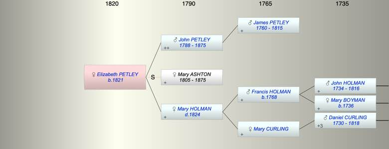

| [Index] |
| Elizabeth PETLEY (1821 - ) |
|  |
| b. 1821 at MInster |
| Parents: |
| John PETLEY (1788 - 1875) |
| Mary Ann HOLMAN ( - 1824) |
| Siblings (2): |
| John PETLEY (1822 - ) |
| James PETLEY (1824 - 1824) |
| Events in Elizabeth PETLEY (1821 - )'s life | |||||
| Date | Age | Event | Place | Notes | Src |
| 1821 | Elizabeth PETLEY was born | MInster | ex 1851 and 1861 census | ||
| 1824 | 3 | Death of mother Mary Ann HOLMAN | Ramsgate | Note 1 | |
| 14 Jan 1875 | 54 | Death of father John PETLEY (aged 86) | Ramsgate | Note 2 | |
| 16 Mar 1875 | 54 | Death of step mother Mary ASHTON (aged 70) | Ramsgate | Note 3 | |
| Created on a Mac™ using iFamily for Mac™ on 8 Oct 2023 |